人人都爱美好的婚礼。虽然在大喜日子中沉思这个问题有点丧气，然而很多婚姻无法长久是现代生活中可悲的现实。
虽然多数人都对自己婚姻的成功率保持乐观，但也不能永远回避在童话以外的现实中维系关系的困难度。不论你是否决定结婚，能知道在长期关系中怎样做才能获得最大程度的快乐岂不是很好？或许我们应该了解高效处理矛盾以及避免陷入灾难性恶性循环的方式？抑或在比翼双飞的同时不失去自我的策略？
为了解决这个问题，我想向你展示我最喜欢的适用于爱情故事的数学应用之一。它牢牢基于现实，由数学家和心理学家合力开发。这种令人赞叹的合作最后传递出强大的信息：现实关系中的数学规律教我们要如何对待彼此才能永远幸福地生活在一起。
每段关系中都会有摩擦，但配偶间的争论方式截然不同——大多数心理学家现在都同意这点，且这种不同可以用来预测一段关系的长久幸福。
在双方都自认为幸福的关系中，不良行为都会被看作特殊情况而不被在意：“他现在压力大”，或者“她最近睡得太少，难怪脾气暴躁”。身处这种令人羡慕的关系中，双方对配偶都持有坚定的正面看法，任何积极行为都会巩固这种看法：“这些花太美了，他总是对我那么好”，或者“她人太好了，难怪会那样做”。
可是在消极关系中，情况恰恰相反。不良行为被认为是常态：“他总是那样”，或者“又来了。她就是那么自私”。正面行为反而被认为是特例：“他涨工资了，所以在炫耀而已，持续不了多久”，或者“她这是有事相求的典型表现而已”。
不过在这些质化看法之外，心理学家约翰·高特曼带领一组学者提出了一个打分方式[1]，分数代表两人之间的积极或消极程度。
几十年来，高特曼和他的团队观察了上百对对话中的夫妇，并测量了一切他们能想到的指标，从面部表情到心率、皮肤导电性、血压，以及谈话内容。
根据高特曼的指标，低危夫妇得到的大多是正分，而已然在关系中挣扎的夫妇则往往陷入负分的恶性循环中。
虽然很少人会在家里设置便携式皮肤导电测试仪，但你可以用一个更简单的技巧来检验自己的婚姻状况。[2]
设置一台摄像机，双方谈论一个意见尤为不同的话题约15分钟并录下来。结束后（怒气消了之后），请回放这段录像并按如下方式为符合下列情绪类别的说话内容打分：
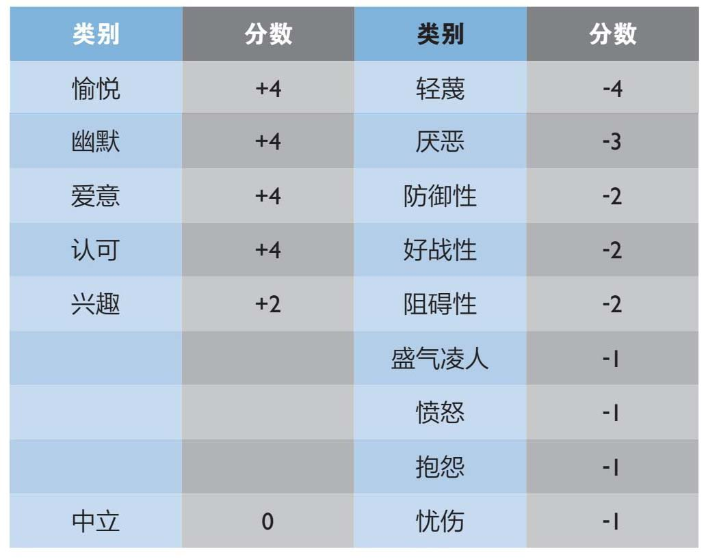
在避免为得分争吵的同时，请试着观察其中显示出的规律。你说的话中有没有引发一系列负面回应的内容？你是否能更开明地接纳对方的观点？我不是心理学家，但是我认为通过数字来客观观察自己的行为，并找到可以促进积极讨论的方式是可以为你带来回报的。
运用学者制定的更精细的打分系统（上述列表的延伸），高特曼和他的团队通过观察夫妻对话，预测离婚的准确率高达90%。然而直到他们和数学家詹姆斯·默里合作后，才真正开始懂得这些关键性的恶性循环是如何形成和发展的。
虽然默里的数学模型设定在夫妻形式的框架内，但它与对待不同性别的传统观念无关，也适用于长期同性伴侣关系。这是数学运用在人类行为规律中的优雅范例，可以用如下两个公式做出微妙的总结。
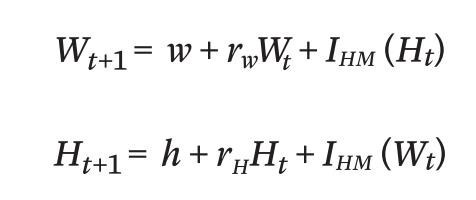
这些公式乍一看或许杂乱晦涩，但它们阐述了用来预测夫妻在接下来的对话中态度积极或消极的一组规则。
我们如果看看第一行关于妻子的公式，就能够分解规则的原理。公式左边仅仅表示妻子在下一句话中态度积极与否。她的反应取决于她的整体心情（
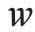
）、与丈夫在一起时的心情（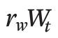
），以及至关重要的，丈夫行为带给她的影响（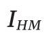
）。公式末端括号里的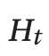
是一个数学简写，代表这种影响取决于丈夫刚刚做了什么。丈夫的公式遵循同样的规律
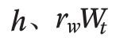
和 分别代表他独处时的心情、和妻子在一起时的心情，以及妻子行为对丈夫接下来的行为产生的影响。值得一提的是，完全相同的公式可以成功解释两个国家在军事较量时发生的一切。所以两夫妻争吵不休陷入恶性循环并濒临离婚，在数学上等同于核战争的开始。
不过这并不意味着公式被毫无目的地塞入了全新的应用。事实证明，公式可以准确捕捉两种情形中发生的一切，这种相似性只意味着对国际冲突的研究见解可以为婚姻的理解赋予新意，反之亦然。这种关联加固而非削弱了数学的意义。
就如核战争爆发前事态不断紧张一样，高特曼和默里的婚姻公式中最重要的便是影响力一项：夫妻间的相互影响。
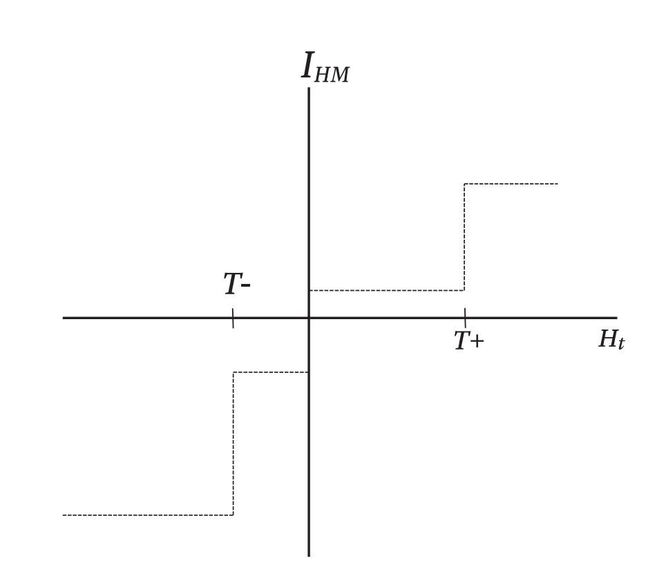
高特曼和默里是最早把数学模型运用在婚姻矛盾中的人，因此他们可以随意选择影响力一项的图形，并判定下图与现实生活中对夫妻的各种观察非常相符。
以丈夫（
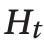
）对妻子（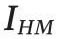
）的影响力为例，上图展示了研究团队选择的数学模型。虚线在
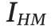
坐标上位置较高时，意味着丈夫对妻子有积极的影响。同理，当虚线跌落到该坐标负数象限时，妻子接下来在对话中更有可能产生消极情绪。假设丈夫做了些略积极的事：他同意了妻子的最后一个观点或在对话中注入了些许幽默。这个行为会对妻子产生小小的积极影响，也使她更有可能做出一些积极的回应。
情形如此发展，直到抵达一个点
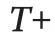
。这里，丈夫做了件非常棒的事，比如对妻子说爱她或是答应陪她一起看她期待很久很久、新上映的舞台剧。任何比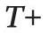
更积极的举动都会对妻子产生很大的影响，也更有可能引领夫妻进入更加美好、稳定的对话，充满了正面强化作用。在坐标另一端，如果丈夫态度略微消极，比如打断妻子说话，会为伴侣带去固定而消极的影响。值得一提的是，这种消极影响比同等的积极影响程度要大。高特曼和他的团队在研究中观察到夫妻间的这种现象，于是刻意嵌入了这种不对称。
在抵达了
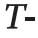
这个被称作“消极限度”的点时，丈夫的讨厌足以使妻子彻底情绪失控，对丈夫做出格外消极的回应。人们发现，这个下限对理解夫妻间关系的恶性循环来说相当重要。由于我一直认为好的关系是关乎妥协和理解的，所以我猜把消极限度设置得非常高才最好。给对方“做自己”的空间，并且只在紧要关头才指出问题。
然而实际上，研究团队发现事实恰恰相反。
在最成功的关系中，消极限度都非常低。[3]在那些关系中，双方都允许对方抱怨，并且时常一起努力修复二人之间的小问题。在那样的情形中，夫妻双方都不会抑制他们的感受，小事不会被无限放大。
故事还没完。[4]长久的幸福生活并非仅仅关乎能够自在地抱怨。我们至少还应该：在对话中依然要选用开明、善解人意的语言，以及要记得尊重伴侣间的个人差异，不要认为自己是对方行为的受害者。而比如我，就很欣慰数学为配偶关系带来了积极信息，巩固了“夫妻没有隔夜仇”的古老智慧。
[1] 这一打分方式被称作特定情绪编码系统，或简写为“SPAFF”。
[2] 打分系统的完整概述参见科恩和高特曼合著的《特定情绪编码系统》（1995）。
[3] 我老公尤其应该记下这点。基于1989~1992年对西雅图新婚夫妇的研究，高消极限度和其他一些不受影响的双方参数一同被证明是离婚可能性的重要标志。
[4] 如果读者对与婚姻有关的学术文献感兴趣，那么阅读这本高特曼、默里、斯旺森、泰森和斯旺森合著的引人入胜、妙笔生花的书一定没错： 《婚姻的数学法则》（Basic Books出版社，2005）。